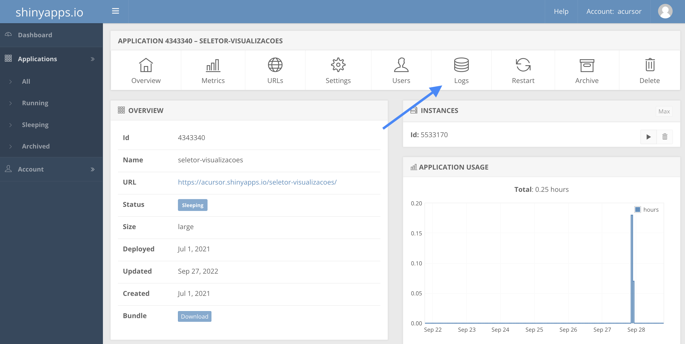

9 Deploy
Neste capítulo (e neste livro como um todo), falaremos de deploy apenas no contexto do serviço shinyapps.io e da configuração de um Shiny Server.
Não falaremos neste livro sobre a utilização de computação em nuvem pois existem muitos serviços disponíveis (AWS, Google Cloud Plataform, Azure etc) e é um tema em constante atualização.
9.1 ShinyApps.io
O ShinyApps.io é um serviço da RStudio para hospedagem de aplicativos Shiny.
A conta gratuita permite até 5 aplicações simultâmneas e 25 horas mensais de uso (um aplicativo utilizado por 1 hora consome 1 hora do seu plano, 2 aplicativos utilizados simultaneamente por 1 hora consomem 2 horas do seu plano). As contas pagas, além de mais horas, fornecem outras vantagens, como suporte personalizado e autenticação.
Criada uma conta, você deve conectá-la com o RStudio. Feito isso, você conseguirá fazer o deploy do seu app com alguns cliques. A seguir, mostramos o passo a passo para conectar a sua conta e para fazer o deploy do seu app.
9.1.1 Conectando a sua conta com o RStudio
Primeiro, crie uma conta no serviço site shinyapps.io.
Faço o login na sua conta e, no menu lateral, acesseo Account > Tokens.

Na página de tokens, clique no botão “Add Token” para criar um novo token. No token criado, clique no botão “Show”.
Na caixa de diálogo aberta, clique no botão “Copy to clipboard” ou clique no botão “Show secret” e copie o código apresentado à esquerda dos botões.
# O código que você deve copiar é similar a este
rsconnect::setAccountInfo(name = 'sua_conta',
token = 'seu_token',
secret = 'secret_do_token>')Abra o seu RStudio e acesse Tools > Global Options… > Publishing.
Na seção “Publishing sections”, clique no botão “Connect”.

Selecione a opção “ShinyApps.io.” e, na tela seguinte, cole o código copiado no site. Clique em Connect Account e pronto! Seu RStudio estará conectado com a sua conta do ShinyApps.io. Você só precisa fazer isso uma vez por conta ou computador.

9.1.2 Subindo o seu app
Com a conta conectada, para subir um app para o servidor do shinyapps.io basta abrir o script do seu app e clicar no botão “Publish”.

Na caixa de diálogo, selecione à esquerda o código do seu app e todos os outros arquivos dos quais ele depende, como bases de dados e a pasta www. Em seguida, escolha um nome para o seu aplicativo (esse nome fará parte do link) e clique em “Publish”.

O processo de deploy pode levar alguns minutos, a depender das dependências do seu app e tamanho dos arquivos que você subir. Quando o processo terminar, você receberá uma URL para acessar o aplicativo.
Caso o seu app não abra devido a algum erro, você pode acessar a os logs de utilização para ter uma dica do que aconteceu. Para isso, no dashboard do ShinyApps.io, acesse Applications > All, no meu lateral. Em seguida, clique no app que você gostaria de investidar. Por fim, acesse a opção “Logs”.
